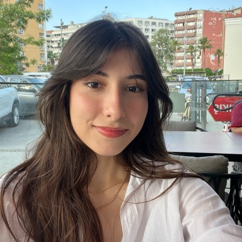

Bilgisayar Mühendisliği Öğrencisi
Yapay zekâ ve bilgisayarlı görü alanlarında çalışarak gerçek hayat problemlerine çözüm üreten projeler geliştiriyorum.

Teknoloji üretmeyi seven, öğrenmeye hızlı adapte olan ve gelişime sürekli açık bir Bilgisayar Mühendisliği öğrencisiyim. Yapay zekâ ve bilgisayarlı görü alanlarında çalışarak gerçek hayat problemlerine çözüm üreten projeler geliştirmeye odaklanıyorum.
Özellikle insan odaklı teknolojiler tasarlamak ve toplumsal fayda sağlayan sistemler geliştirmek beni motive ediyor. Takım çalışmalarında sorumluluk almaktan keyif alır, yeni teknolojileri denemekten çekinmem ve projeleri fikir aşamasından çalışan bir ürüne dönüştürme sürecinde aktif rol üstlenirim.
Teknik becerilerimi yoğun yazılım süreçleriyle destekleyerek sadece geliştiren değil, ürettiği sistemi sürdürülebilir hale getirebilen bir mühendis olmayı hedefliyorum.
Bilecik Şeyh Edebali Üniversitesi
2022 - Devam EdiyorAdana / Çukurova
İngilizce (B1) · Fransızca (A1)
Yüzme · Tenis · Fotoğrafçılık
Sokak görüntülerinde nesne tespiti için YOLOv8, yapısal alan analizi için SegFormer modeli kullanılarak görme engelli bireyler için gerçek zamanlı çalışabilecek mobil uygulama altyapısı tasarlandı. Engeller ve yol bilgileri için sesli geri bildirim sistemi planlandı.
Information Technology Club
Teknoloji odaklı etkinliklerin ve teknik gezilerin organizasyonunda aktif rol alındı. Üniversite-sanayi iş birlikleri süreçlerine katkı sağlandı.
Bilecik Şeyh Edebali Üniversitesi
Yapay zekâ, bilgisayarlı görü, gömülü sistemler ve yazılım mühendisliği alanlarında aktif projeler geliştirmektedir.